How to use this guide
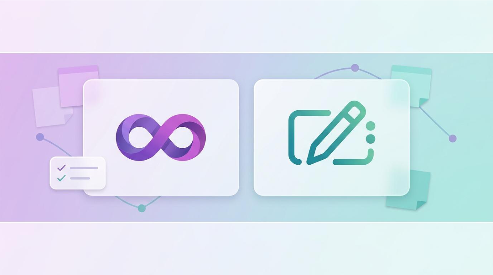
This workbook walks you through ten practical topics that show how Microsoft Loop and Microsoft Whiteboard work together to plan, collaborate, decide, and track work — all without scattering content across disconnected tools.
Each topic follows the same simple structure so you always know what to expect:
- Brief description — what the feature is and where it lives in Microsoft 365.
- Why it helps — the real productivity payoff for your day-to-day work.
- Step-by-step — clear, numbered actions you can follow on screen.
- Visuals — realistic interface views so you recognise each screen.
How to read the screenshots
The mental model: Loop + Whiteboard in the flow of work
Brief description
Microsoft Loop is built from three layers. Components are live building blocks (lists, tables, task lists, polls). Pages are flexible canvases that hold those components and other content. Workspaces are project containers that pull related pages and files together.
Microsoft Whiteboard is an infinite freeform canvas for visual collaboration — sticky notes, drawing, diagrams, and live group work. The key idea: a single Loop component can live in Teams chat, Outlook, Word for the web, and Whiteboard at the same time, and it stays in sync everywhere.
How this boosts productivity
- Stop copying and pasting the same list into five places — maintain one live source of truth.
- Pick the right surface for the moment: Loop to structure, Whiteboard to think visually.
- Updates made anywhere appear everywhere instantly, so no one works from a stale version.
Step-by-step
- Open Microsoft Loop at loop.microsoft.com (or the Loop app) and sign in with your work account. Notice the left sidebar listing your workspaces and pages.
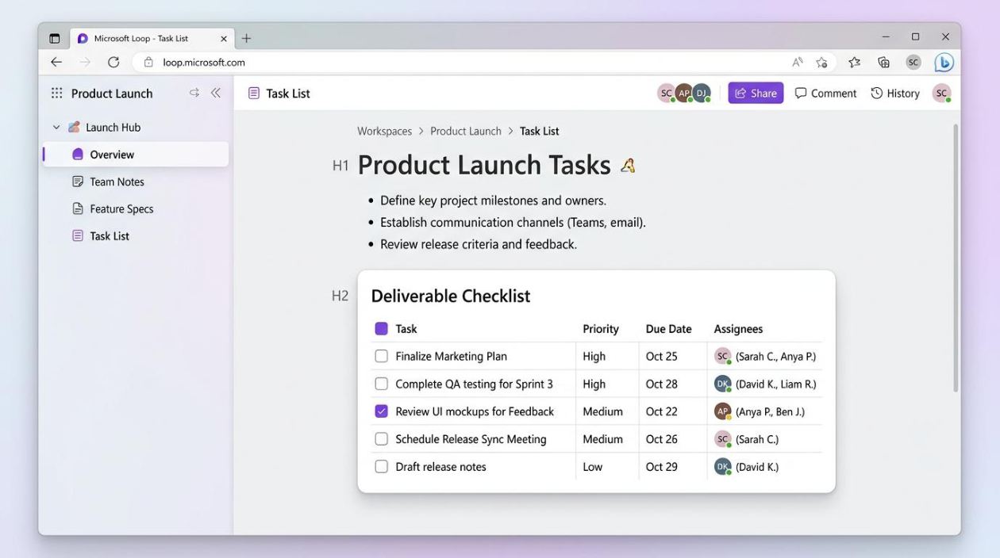
- On a page, identify the three layers — the workspace name (top), the page you are on, and any component cards embedded in the page content.
- Remember the sync principle: wherever a component is pasted, it is the same object. Editing it in Teams updates it in Loop, Outlook,
Word, and Whiteboard automatically.
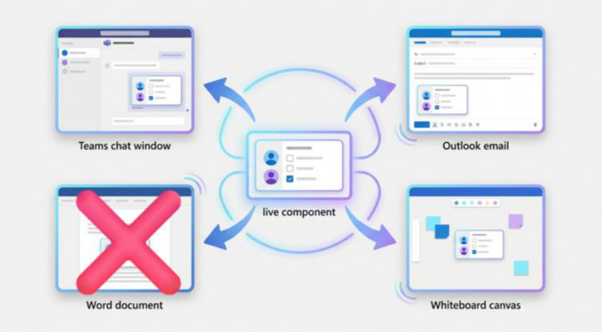
Worked scenario
Copilot in Loop: from blank page to structured plan
Brief description
Copilot inside Loop helps you go from an empty page to a structured draft in seconds. Instead of staring at a blank canvas, you describe what you need and Copilot scaffolds it — project plans, meeting agendas, or SOP outlines.
Copilot offers modes such as Create, Brainstorm, Blueprint, and Describe, and it can refine what it produces: change the tone, turn paragraphs into bullets or tables, or generate alternative versions.
How this boosts productivity
- Beats “blank page syndrome” — start from a solid draft rather than nothing.
- Reformat content instantly (paragraph → bullets → table) without manual rework.
- Iterate faster by asking for alternatives instead of rewriting from scratch.
Step-by-step
- On a new or existing Loop page, type / or click the Copilot prompt box, then choose a mode (Create, Brainstorm, Blueprint, or Describe).
- Write a short brief, e.g. “Draft a rollout plan for a new HR system.” Be specific about audience, phases, and the output you want.
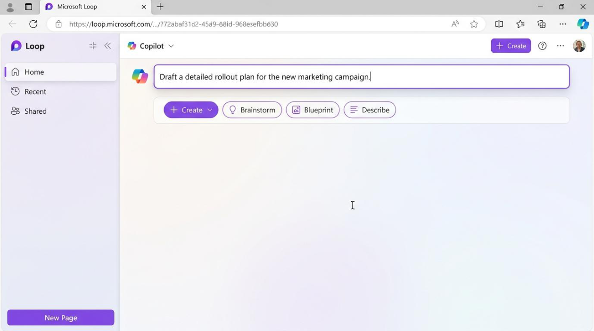
- Review the draft Copilot generates — headings, bullets, and structure appear directly on the page.
- Refine it: ask Copilot to “convert this section into a table,” “make it more concise,” or “turn these into an action list with owners.”
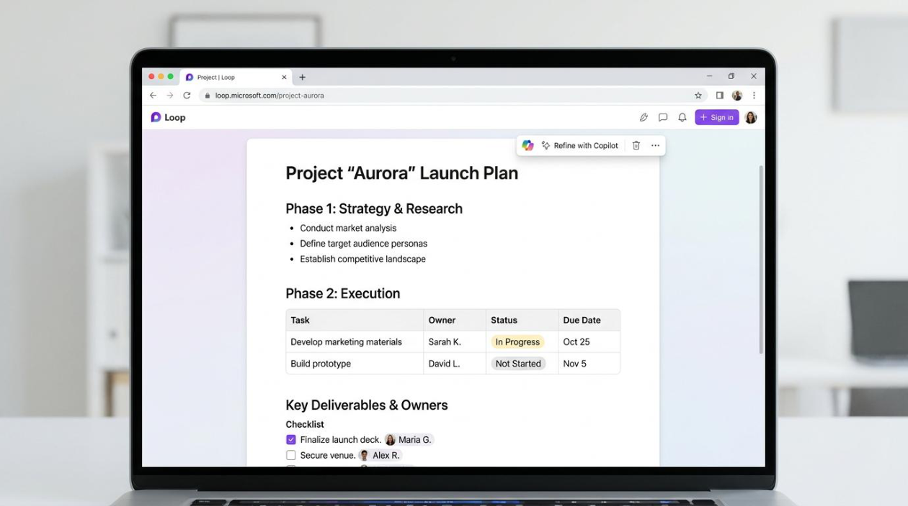
- Keep what works, edit the rest by hand, and add live components where you need tracking.
Worked scenario
Loop components for action tracking across apps
Brief description
Loop components are live building blocks — tables, checklists, task lists, progress trackers, and voting tables — that you create once and share anywhere. They are designed to eliminate copy-and-paste chaos: edits sync everywhere in real time.
You can drop a component into Teams chat or Outlook, and you can paste an existing component into Whiteboard for collaborative activities like prioritisation, dot-voting, and status reviews.
How this boosts productivity
- One live list instead of many stale copies across chats and emails.
- Owners and due dates stay current no matter where teammates update them.
- Move the same component between focused work (Loop) and group activities (Whiteboard) seamlessly.
Step-by-step
- On a Loop page, click the “+” insert menu and choose a component — start with a Task list or a Voting table.
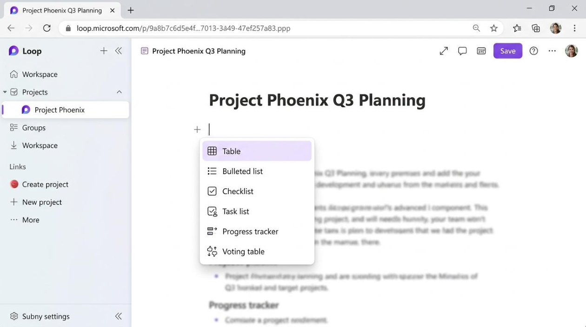
- Fill in the rows — tasks, owners, due dates, or options to vote on.
- Copy the component (or use the share/“…” menu) and paste it directly into a Teams chat message, then send it.
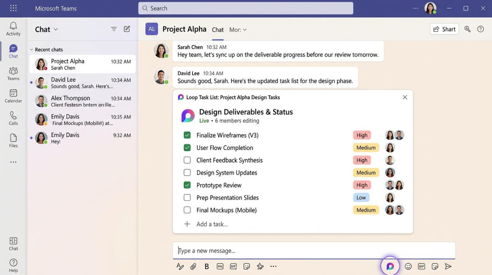
- Watch it stay in sync: as teammates tick items or change owners in Teams, the same component updates back in Loop.
- When you need a group activity, paste the component into a Whiteboard so everyone can edit it together during the session.
Worked scenario
Copilot in Whiteboard: structured ideation and synthesis
Brief description
Copilot in Whiteboard turns a messy brainstorm into organised insight. Use Suggest to generate new ideas from what is already on the board, and Generate more to expand a set of sticky notes.
Then use Categorise to automatically group sticky notes and drawings into labelled clusters — a huge time-saver during retrospectives, design-thinking, or lessons-learned sessions.
How this boosts productivity
- Break through idea droughts — Copilot suggests directions you may have missed.
- Replace slow manual clustering with instant, themed grouping.
- Move from raw ideas to clear themes in minutes, speeding up decisions.
Step-by-step
- Open a Whiteboard (in the Whiteboard app or inside a Teams meeting) and run a short sticky-note brainstorm — one idea per note.
- Open the Copilot menu and choose Suggest (or Generate more) to expand the set of ideas based on what is on the board.
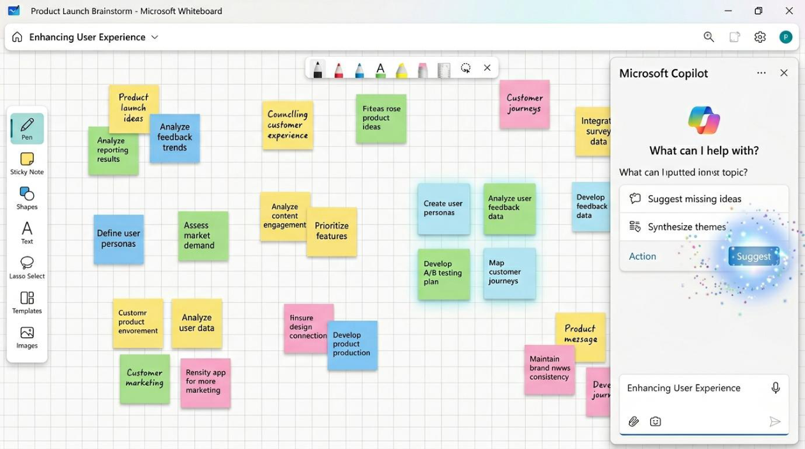
- Review the suggested notes, keep the useful ones, and delete the rest.
- Choose Categorise to let Copilot sort the notes into labelled clusters automatically.
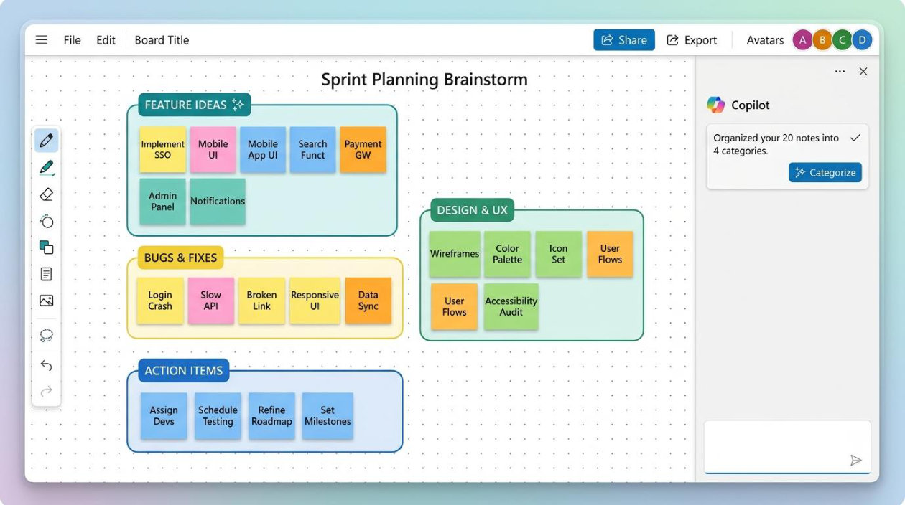
- Rename or merge clusters as needed, then discuss the themes and agree next steps as a group.
Worked scenario
Whiteboard as a facilitation tool in Teams meetings
Brief description
Whiteboard is built into Teams meetings, which makes it a powerful live facilitation surface. Features like Follow keep everyone on the same part of the canvas, and pre-prepared boards let you reuse and iterate across recurring sessions.
Timers, templates, and integrated OneDrive storage support structured, repeatable meeting formats — including collaboration across organisations when tenant settings allow.
How this boosts productivity
- Guide large or remote groups smoothly with everyone following your view.
- Reuse boards across recurring meetings instead of starting from scratch each time.
- Run tighter, more engaging sessions with timers and ready-made templates.
Step-by-step
- In a Teams meeting, click Share, then choose Microsoft Whiteboard to open a board for everyone.
- Turn on Follow (presenter follow) so participants’ views move with yours as you navigate the canvas — ideal when guiding a group.
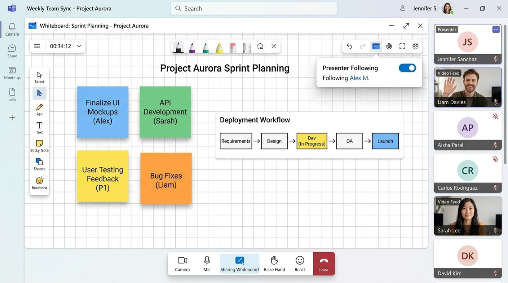
- Use a pre-prepared board: open one you saved earlier rather than building from a blank canvas.
- Add a timer for timeboxed activities and pick a template that fits the session (stand-up, retro, kickoff).
- After the meeting, the board is saved automatically to OneDrive for Business so you can revisit or reuse it next time.
Trainer tip
Backgrounds, templates, and reusable boards as assets
Brief description
Treat your Whiteboards and Loop pages as reusable content objects, not throwaway scribbles. Setting a default background — grid, dotted, lined, or a kanban layout — gives every new board a consistent look that supports a specific activity.
Saved boards and Loop pages become templates for common workflows: daily stand-ups, weekly check-ins, project kickoffs, or learning activities — building a library you can reuse and adapt.
How this boosts productivity
- Consistent, purpose-built canvases reduce setup time for every session.
- A template library turns one-off effort into a repeatable asset.
- Participants can copy your boards into their own tenant and adapt them.
Step-by-step
- Open a Whiteboard and select the Format / background option from the toolbar.
- Choose a background that matches the activity — a grid or dotted grid for diagrams, or a kanban layout for status tracking.
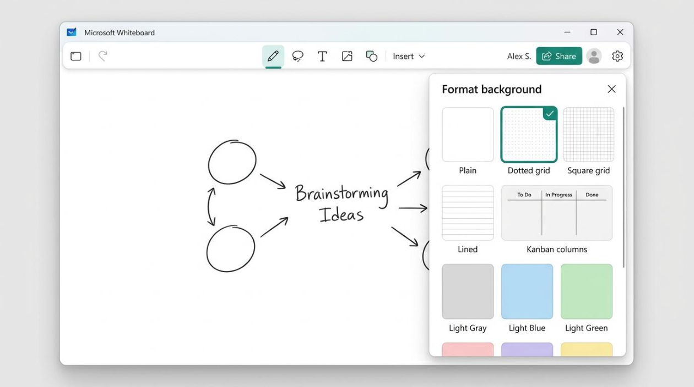
- Build out the board once with the structure you reuse often (columns, headings, prompts).
- Save it with a clear name, then duplicate it for each new session instead of rebuilding.
- Do the same in Loop: keep a “template” page you copy for recurring meetings or learning activities.
Trainer tip
Integrating Forms, polls, and feedback
Brief description
You can capture opinions and decisions without ever leaving the collaboration surface. Paste a Microsoft Forms poll as a Loop component into a Whiteboard so participants respond on the canvas and see results update live.
Combine polls with Loop voting tables or checklists to move from “opinions” to “documented decisions and owners” in a single flow.
How this boosts productivity
- Gather input in context — no switching apps or chasing responses.
- See results live, so the group can react and decide immediately.
- Turn votes straight into an owned, trackable action list.
Step-by-step
- Create a quick poll in Microsoft Forms (or use the Forms/poll option), then copy it as a Loop component.
- Paste the poll onto your Whiteboard so participants can vote directly on the canvas while seeing results update.
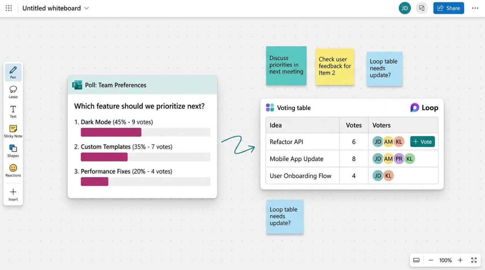
- Run the vote, then use a Loop voting table to confirm the top choices as a group.
- Push the winning items into a Loop task list, assigning an owner and due date to each.
- Share that task list in Teams so it becomes the live action tracker after the session.
Worked scenario
Links, content embedding, and multi-app navigation
Brief description
Keep context together instead of scattered. In Whiteboard you can add clickable links that show rich previews — and even playable videos — directly on the board, so reference material stays in view during a session.
Loop workspaces bring related documents, files, and pages together for a project, so people spend less time hunting through Teams channels or SharePoint sites.
How this boosts productivity
- Reference material lives on the canvas — no tab-switching mid-discussion.
- A single workspace becomes the “home base” for a project or training session.
- Less hunting for files means more time spent on the actual work.
Step-by-step
- On a Whiteboard, paste a URL onto the canvas — it appears as a rich link card with a preview image and title.
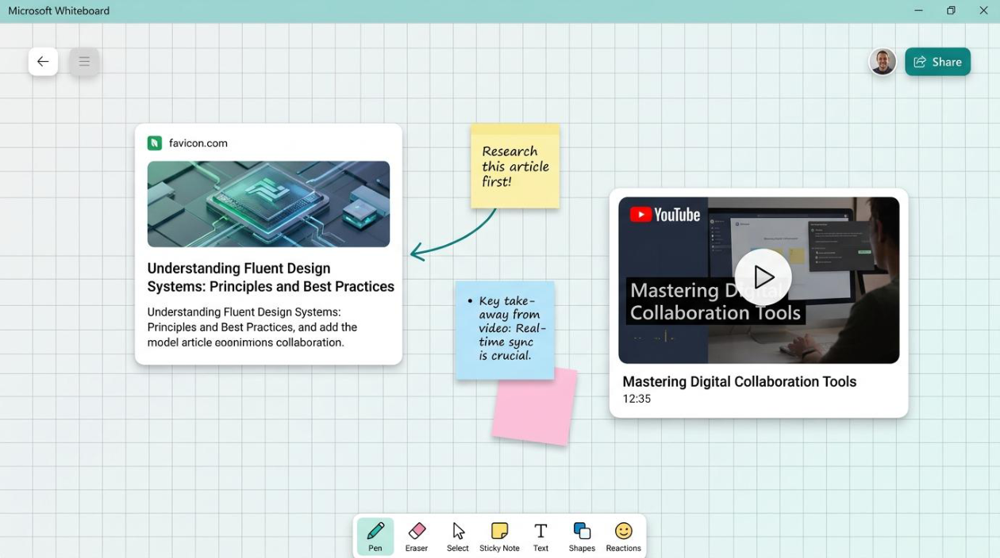
- Paste a video link to embed a playable card so the group can watch without leaving the board.
- Arrange reference cards near the related activity so context is obvious at a glance.
- In Loop, open or create a workspace and add the project’s key pages and files so everything lives in one place.
- Use the workspace as the single starting point for prework, boards, files, and post-session actions.
Trainer tip
Cross-organisation collaboration and storage
Brief description
Modern Whiteboards are stored in OneDrive for Business, which enables real-time collaboration with external organisations when your tenant settings allow it. Loop components and pages live within Microsoft 365 and inherit its permissions and sharing controls.
For sensitive projects and external participants, that means access, ownership, and retention all follow your organisation’s governance — worth understanding before you invite outside collaborators.
How this boosts productivity
- Collaborate with partners and clients securely, within sanctioned controls.
- Sharing follows familiar M365 permissions — no separate, risky workaround.
- Clear ownership and storage make it easy to archive or retire content after a project.
Step-by-step
- Open the Share dialog on a Whiteboard or Loop page.
- Choose who can access it — people in your organisation, or specific people including external guests (if your tenant permits).
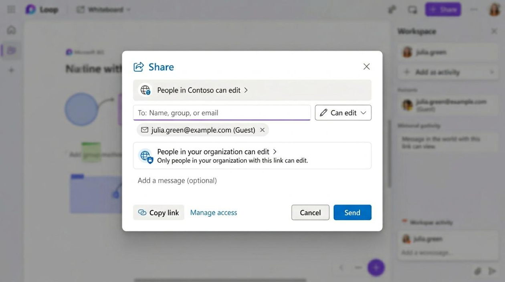
- Set the permission level — can edit or can view — appropriate to the audience.
- Confirm where the content is stored (Whiteboard → OneDrive for Business) and who owns the workspace.
- Plan the end state: decide who archives or retires the board or workspace when the project closes.
Trainer tip
Putting it together: a sample productivity flow
Brief description
This final topic ties everything into one end-to-end journey. The goal is to show how a single piece of work can move from idea, to collaboration, to decision, to tracked action — entirely within Loop and Whiteboard, instead of scattering content across disconnected tools.
How this boosts productivity
- See the whole workflow as one connected flow, not isolated features.
- Carry the same live content from planning through to tracked outcomes.
- Leave every session with documented decisions and clear owners.
Step-by-step
- Start in Loop: create a workspace for a new initiative and use Copilot to generate a project plan.
- Build a task-list component on the page to capture the actions and owners.
- Move into Teams + Whiteboard: paste the task list into a Whiteboard for the kickoff workshop.
- Use Copilot in Whiteboard to expand and categorise ideas, then finalise priorities and owners as a group.
- Return to Loop to track ongoing progress — the same live components now serve as your action tracker.
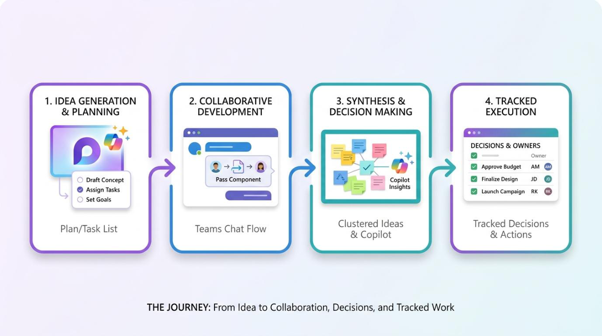
Worked scenario
Microsoft Loop & Whiteboard
Fun, hands-on activities for enhanced collaboration — No-Copilot edition · groups of 4
Afton Chemical · MS365 Series, Episode 8 | 9 activities · 5–10 minutes each
What changed in this version
- No Copilot required. Every Copilot step has been replaced with standard Loop & Whiteboard features that work on a normal Microsoft 365 licence — no premium AI add-on needed.
- Built for groups of four. All small-group activities now run in groups of 4 (the way the room is arranged).
- Whole-group favourites kept as-is: “The Great Vote-Off” and the “Follow-the-Leader Treasure Hunt” are unchanged.
How to use this pack
Each activity is a short, playful challenge that puts one part of the Participant Guide into practice — using only the standard, free features of Loop and Whiteboard. Pick the ones that fit your time and group. Every activity lists how long it takes, the format, what people need, how to run it, a fun twist, and a quick debrief question.
- Before you start: each group needs devices signed in to Microsoft 365 with Loop (loop.microsoft.com) and Whiteboard — no Copilot or premium AI licence required. A few activities use a live Teams meeting.
- Groups of four throughout; two activities run with the whole group together.
- Keep it light: the twists are meant to get people laughing — the learning sticks because the doing is fun.
- Re-use your assets: boards and Loop pages you build in these activities become templates your team keeps.
At a glance
| # | Activity | Maps to | Time | Format |
|---|---|---|---|---|
| 1 | Sync or Swim | Topics 1 & 3 | 7 min | Groups of 4 |
| 2 | Build-a-Plan Race | Topics 2–3 · no Copilot | 8 min | Groups of 4 |
| 3 | Sticky Storm & Affinity Sort | Topic 4 · no Copilot | 8 min | Groups of 4 |
| 4 | The Great Vote-Off | Topic 7 | 7 min | Whole group |
| 5 | Follow-the-Leader Treasure Hunt | Topic 5 | 6 min | Whole group (Teams) |
| 6 | Board Bake-Off | Topic 6 | 9 min | Groups of 4 |
| 7 | Link Heist | Topic 8 | 6 min | Groups of 4 |
| 8 | Relay: Idea → Tracked Action | Topic 10 | 10 min | Groups of 4 |
| 9 | Permission Detective (bonus) | Topic 9 | 5 min | Groups of 4 |
Activity 1 · Sync or Swim
You'll need: One shared Loop page + a group Teams chat with all four members in it.
The goal: Feel — live, not in theory — what “one live source of truth” means across four people.
How to play
- Runner A: on a Loop page, insert a Task list component and add 4 quick tasks with owners (make them silly, e.g. “Name the lab mascot”) — one task per teammate.
- Runner A: copy the component and paste it into your group Teams chat, then send.
- The other three: open the chat and each tick off or edit your own task — right inside Teams, all at once.
- Runner A: do NOT refresh — watch all three changes appear on your Loop page automatically. Cheer as each one lands.
- Rotate: a different person creates the next component so everyone gets a turn.
Activity 2 · Build-a-Plan Race
You'll need: One shared Loop page per group (use a starter template page if you have one).
The goal: Go from a blank page to a structured plan fast — using Loop's own building blocks and real-time co-authoring. No Copilot or premium AI needed.
How to play
- Open one shared Loop page for the group. Brief: “Plan a chemistry-themed team lunch-and-learn” (or a real team task).
- Split the page into four blocks — Overview, a Phases table, an Action list, and a Timeline — and give one block to each teammate.
- Use the / insert menu to add the right live component for your block: a Table for phases, a Task list (owners + due dates) for actions, a checklist for the timeline.
- All four build at the same time on the same live page — watch each other's sections appear in real time.
- Take 60 seconds together to tidy it into one clean plan.
Activity 3 · Sticky Storm & Affinity Sort
You'll need: One shared Whiteboard per group.
The goal: Turn a messy brainstorm into clear, named themes — by hand — using Whiteboard's sticky notes and grouping. No Copilot needed.
How to play
- Open a shared Whiteboard. Run a 2-minute sticky-note storm on: “How might we make our Monday huddles 10× better?” — one idea per note, all four adding at once, no filtering.
- Silent sort: with NO talking, drag related notes together into clusters (affinity mapping). Let the groupings emerge.
- Give each cluster a header note that names the theme.
- Dot-vote: each person gets two dots — place them on the strongest ideas (Whiteboard has a reactions/sticker option, or just draw dots).
- Pick the top idea and write one concrete next step beside it.
Activity 4 · The Great Vote-Off
You'll need: A shared Whiteboard, a quick Microsoft Forms poll (or Loop voting table), and a Teams chat.
The goal: Get from “opinions” to a documented, owned decision in one smooth flow — without leaving the canvas.
How to play
- Facilitator: create a quick Forms poll (or Loop voting table) — e.g. “Which team perk should we pitch to management?” — and paste it onto a shared Whiteboard as a Loop component.
- Everyone votes directly on the canvas and watches the results update live.
- Confirm the top choice as a group using the voting table.
- Push the winning item into a Loop task list with an owner and a due date.
- Share that task list into the Teams chat so it becomes the live action tracker.
Activity 5 · Follow-the-Leader Treasure Hunt
You'll need: A Teams meeting + a pre-prepared Whiteboard with items hidden across a big canvas.
The goal: Experience how Presenter Follow keeps a whole group on the same part of the canvas.
How to play
- Facilitator: before the session, scatter a few “treasures” (icons or sticky notes) across a large Whiteboard.
- In the Teams meeting, click Share → Microsoft Whiteboard to open the board for everyone.
- Turn ON Follow (presenter follow) and lead the group on a hunt — jump between treasures and watch everyone's view snap to yours.
- Turn Follow OFF and let participants roam the canvas freely to find one bonus item on their own.
- Regroup and compare: guided view vs. free-for-all.
Activity 6 · Board Bake-Off
You'll need: One shared Whiteboard per group, with background/format options.
The goal: Build a reusable board the group will actually keep — a template, not a throwaway scribble.
How to play
- As a group, open a Whiteboard and set a background that fits the job — a kanban layout for status, or a dotted grid for diagrams.
- Build one simple reusable board together — e.g. a daily stand-up with three columns: Yesterday / Today / Blockers. Split the columns among the four of you.
- Add the headings and prompts you'd reuse every week.
- Save it with a clear name, then duplicate it — the copy is “next Monday's board.”
- On the duplicate, set it up for a pretend Monday — each person fills their part.
Activity 7 · Link Heist
You'll need: One shared Whiteboard + a couple of URLs and a video link + a Loop workspace.
The goal: Keep all your context on the canvas so nobody tab-hops mid-discussion.
How to play
- On a Whiteboard, paste a URL — it appears as a rich link card with a preview.
- Paste a video link to drop a playable card the group can watch without leaving the board.
- Arrange the reference cards right next to the activity they support, so context is obvious at a glance.
- In Loop, create (or open) a workspace as your group's “home base” and add two key pages or files.
- Agree where your team's single starting point should live.
Activity 8 · Relay: Idea → Tracked Action
You'll need: One Loop page + one Whiteboard per group; standard features only.
The goal: Run a single piece of work all the way through Loop and Whiteboard — idea → collaboration → decision → tracked action — as a relay, with no Copilot.
How to play
- Leg 1 (Runner A, ~2 min): in Loop, start from a template page (or blank) and build a mini project-plan skeleton — a heading and two or three phases.
- Leg 2 (Runner B, ~2 min): add a Task list component — actions with owners and due dates.
- Leg 3 (Runner C, ~3 min): paste the task list into a Whiteboard; the group adds sticky notes to expand ideas and drags them into groups; agree the priorities.
- Leg 4 (Runner D, ~2 min): back in Loop — the same live component is now the tracker. Tick one item done and watch it stay in sync.
- Whole group (~1 min): trace the journey out loud — where did the content stay live instead of being copied?
Activity 9 · Permission Detective (bonus)
You'll need: Four short scenario prompts (read them out or put them on a Loop page).
The goal: Get sharing and governance right before you ever invite an outsider onto a board.
How to play
- Read each scenario, e.g. “Share a sensitive board with a client,” or “Let the whole org view our retro.”
- For each, the group decides: who can access it (people in your org / specific people / external guest)?
- … and the permission level: can edit or can view?
- … and where it's stored (Whiteboard → OneDrive for Business) and who owns the workspace.
- Finally: who archives or retires it when the project closes?